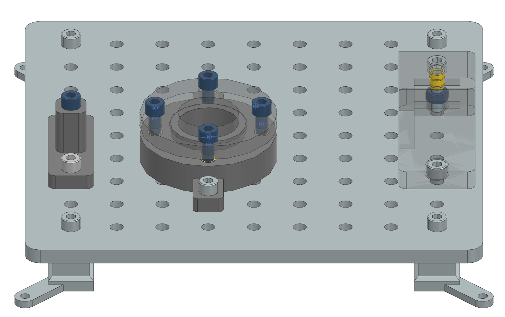
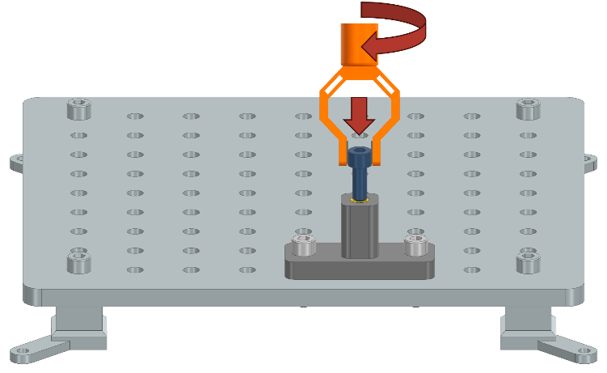
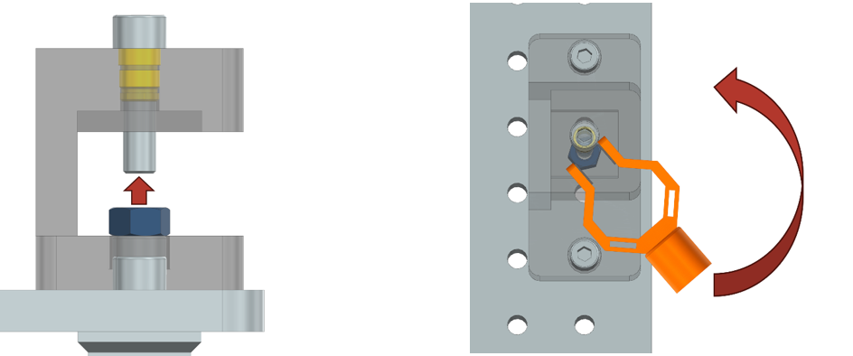
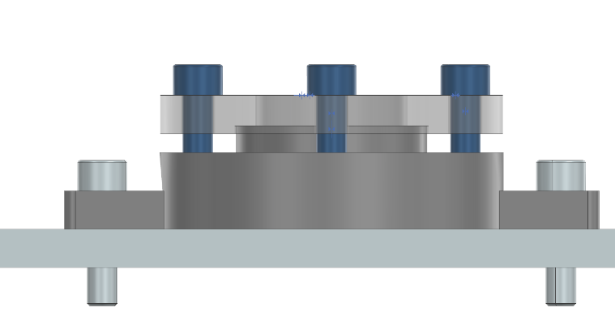

Tasks involving Screws and Nuts
Screws and nuts are fundamental fasteners used to join components in industrial assemblies. In robotics, handling these parts requires precise manipulation, alignment, and force control to ensure reliable and repeatable assembly. The following tasks evaluate the robot’s ability to autonomously perform screw and nut assembly operations under realistic constraints, reflecting challenges encountered in automated industrial environments. A task board with all three screw and nut assembly tasks completed successfully is shown below:
{kind=link}
Task 1: Vertical Screw Insertion
Description:
A 20mm M8 screw is placed on a flat surface next to the Task Board. The robot must pick up the screw, align it with a threaded insert on the Task Board, and insert it vertically. The robot must ensure the screw is properly oriented and fully inserted without cross-threading or applying excessive force.
{kind=link}
Test Objective:
This task evaluates the robot’s ability to autonomously grasp, align, and insert a screw into a threaded insert, demonstrating manipulation and force control.
Success Criteria:
The screw is fully inserted into the thread insert.
The screw cannot be further tightened without excessive force.
The screw remains stationary after insertion.
Task 2: Nut Assembly with Limited Accessibility
Description:
An M8 nut is placed on a flat surface next to the Task Board. The robot must pick up the nut and insert it onto a screw protruding from the side of an assembly component. Due to an overhang, the last 5mm of threading is especially difficult to access, requiring the robot to regrasp and reposition the nut during assembly.
{kind=link}
Test Objective:
This task evaluates the robot’s ability to handle nuts in constrained spaces, including regrasping and adapting its approach to overcome limited accessibility.
Success Criteria:
The nut is fully threaded onto the screw until it cannot be tightened further by the robot.
The nut remains stationary after assembly.
Task 3: Multi-Screw Assembly with Alignment Constraints
Description:
Four 20mm M8 screws are placed on a flat surface next to the Task Board. The robot must pick up each screw, align it with the corresponding holes in two housing parts, and insert them sequentially. A key challenge in this task is avoiding canting—a phenomenon where tightening a single screw fully causes the parts to tilt or misalign due to uneven force distribution. Canting is highly dependent on the geometry and tolerances of the parts being assembled. To prevent this, the robot must use a sequential approach, partially tightening each screw in turn and only fully tightening them once all screws are in place, ensuring the two housing parts remain parallel with a maximum alignment error of 1°.
{kind=link}
Test Objective:
This task evaluates the robot’s ability to perform multi-point screw assembly while maintaining precise alignment between components, and deal with the challenges of canting during assembly.
Success Criteria:
All four screws are fully inserted and tightened.
The two housing parts are screwed together and aligned parallel within 1°.